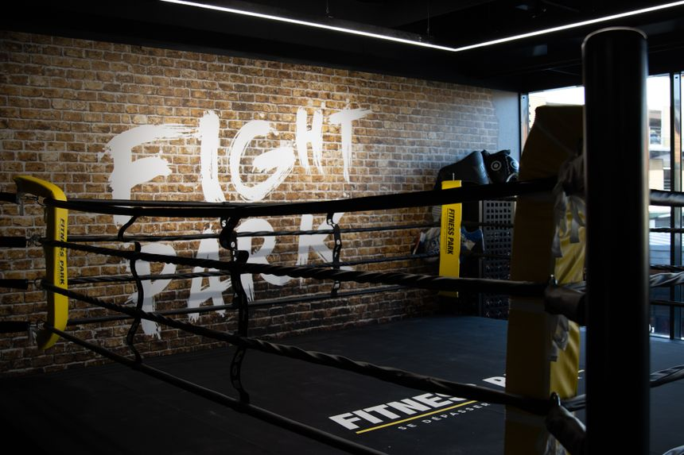

On bouge!
L’image de Bourges, ce qui fait sa réputation au niveau national, c’est avant tout sa majestueuse cathédrale. Souvent citée parmi les 10 plus belles cathédrales de France, Saint-Etienne de Bourges, classée au patrimoine mondial de l’Unesco nous a impressionné par l’harmonie de ses proportions. Ce n’est pas la plus grande, ou la plus ancienne, mais totalement intégrée dans le centre ville, elle donne une impression de profondeur vraiment étonnante et possède de superbes vitraux. cathédrale saint etienne de bourges

Visiter les jardins
Si se promener dans le marais est en soit un moment agréable, surtout par une journée très chaude et ensoleillée comme c’était le cas, le découvrir avec un angle naturaliste apporte une toute autre dimension.

Les musées et les galeries d’art
Entre les expositions modernes, contemporaines ou plus classiques, les galeries d’art a Bourges sont nombreuses. Et pour cause, ces cavernes aux trésors invitent à se promener sur tout le département et à y dénicher les plus jolies pépites. Découvrez notre galeries d’art incontournables du département.

Cinémas, sorties
Il y a 3 cinémas à bourges de vous pouvez choisir:cinéma Le Rio, cinéma CGR Bourges, cinéma de la Maison de la Culture.

Bibliothèques
4 établissements dans la Ville de Bourges
Après avoir passé en revue et choisi votre bibliothèque préférée, voici le lien pour vous montrer le chemin:
Piscines
Centre nautique Raymond Boisdé
Pl. Pierre de Coubertin, 18000 Bourges
-Intérieur :
Grand bassin de 50 m x 20 m, profondeur 1,80 m
Sur la période estivale

Piscine des Gibjoncs
Rue de Turly, 18000 Bourges
-bassin de 25 m x 10 m, toit ouvrant, profondeur progressive de 0,90 m à 2,10 m
-Sur la période estivale :
Salle de sport
Musculation, Fitness, Cross-Training, Boxing, Biking & Cardio-Training
Centre commercial Avaricum, Avenue de Peterborough 18000 Bourges

Restaurants
Vous recherchez un restaurant à Bourges dans le centre-ville, dans le quartier du Marais ou ailleurs ? Rien de plus simple grâce à notre large sélection d’établissements ! Avec ces restaurants gastronomiques, japonais ou chinois même ouverts le dimanche à Bourges, c’est une avalanche de saveurs qui vous attend. Toutes les plus belles adresses de la ville sont réunies ici, à l’image du Petit Resto à Bourges, de La Suite ou encore de La Gargouille.